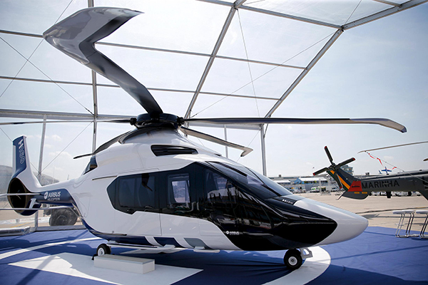
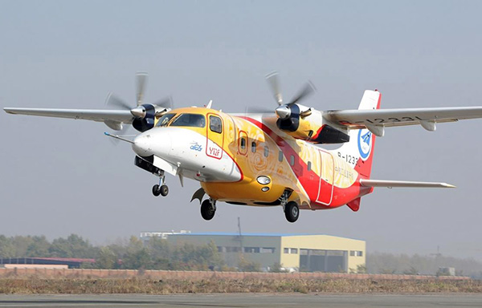

通航制造持续火热
- 根据通用航空制造商协会（GAMA）所公布的数据，2015年前三季度全球固定翼通用飞机交付量仅为1558架，民用直升机交付量为658架，比2014年同期分别下降6.5%和5.9%。能源价格的持续走低、区域发展与政治因素的不利影响、备受关注的“金砖四国”经济发展增速降缓等多重因素的综合作用，抑制了全球通航市场需求的增长，并将在接下来的1至2年内持续影响通航市场发展。
- 不过，从长远来看，通航市场依然具有较大发展潜力。一方面，更多应用领域的开发以及通航次发达地区的发展潜力给了通航产业广阔的市场空间；另一方面，通航制造的技术革新有力地推动了通航产品的更新换代，产业发展的车轮滚滚向前。
- 以公务航空为例，据霍尼韦尔预测，未来10年全球公务机增量将达到9200架。因此，加快新机型的研发进程、尽早抢占通航市场高地成为大多数通航制造商的不二选择。
- 在众多公务机产品中，远程及超远程公务机具有抗市场风险能力强、投资收益高、颇受新兴市场青睐等特点，是主流公务机制造商的首选。2014年底，达索公司与湾流公司分别推出了全新超远程公务机达索猎鹰8X和远程公务机湾流G500，两家公司在2015年上半年先后完成了新机型原型机的首飞。而深陷财政危机的庞巴迪宇航为了全力支持环球7000项目的推进，不得不终止里尔85项目、延迟环球8000项目以及裁员数千人，以保证庞巴迪在超远程公务机市场的持续竞争力。除此之外，一向主攻轻中型通用飞机的赛斯纳也在2015年底宣布将研制航程超过8000千米的远程公务机Citation Hemisphere，以此进军大型公务机市场。
- 2015年全球民用直升机产业在新机型推进和新技术革新上也取得了较好成绩。2015年3月，空中客车直升机公司发布了全新的H160中型直升机，并在6月完成首飞。该机型为全球首款全复合材料的民用直升机，采用双倍倾斜12度的Fenestron涵道式尾桨及全新双翼水平安定面，并首次运用空客直升机Blue Edge主桨叶，能大幅减少噪音并提高有效载荷。空客直升机还宣布推出X6双发重型直升机，该机将主要面向油气市场以及搜索救援、VIP包机等领域。另外，迟到半年的贝尔525 Relentless超中型直升机也顺利赶上了“2015首飞”的队伍。作为全球首架采用电传操纵系统的民用直升机，贝尔525目前已收到超过60架的购买意向。
- 电动飞机的产品研发逐步推进。由空客车研制的E-Fan电动飞机创造了全电动飞机首飞英吉利海峡的纪录，空客将继续改造现有飞机的续航能力，使其更好地应用于飞行员培训。此外，我国自主研制的首款电动力轻型运动飞机RX1E获颁生产许可证，成为目前全球唯一取得型号设计批准证书（TDA）和生产许可证（PC）的电动轻型运动类飞机。该机型现已收获28架订单。
- 在国外通航制造商加速开展新产品研发之时，以中航工业为代表的中国通航制造企业所取得的成果同样喜人。由中航工业哈飞自主研制的运12E获得了俄罗斯适航当局颁发的型号认可证，并与俄罗斯福莱航空公司达成15架飞机的销售合同，正式进军独联体国家市场。运12F获得了中国民航局颁发的型号合格证，国内外客户的确认和意向订单接近50架。中航通飞西锐公司迎来了交付第6000架全新飞机的历史性时刻，该公司的飞机现已服役于全球60多个国家和地区。“中国制造”在全球通航市场的战略布局不断扩大。


